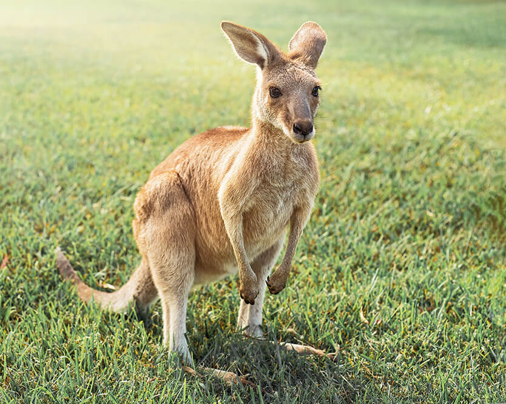

Kahverengi kanguru (Macropus fuliginosus), Avustralya’nın güney ve batı bölgelerinde yaşayan, ülkenin en yaygın kanguru türlerinden biridir; güçlü arka bacakları ve uzun kuyruğu sayesinde büyük sıçramalar yapabilen bu hayvanlar, genellikle otçul beslenir ve çimen, yaprak gibi bitkilerle yaşamlarını sürdürür. Erkekleri 2 metreye kadar uzayabilir ve 90 kilograma ulaşabilirken dişiler daha küçük yapılıdır; sosyal yaşamlarında geniş sürüler halinde hareket ederek hem beslenme hem de korunma açısından dayanışma sergilerler. Ortalama 20 yıl yaşayabilen kahverengi kangurular, Avustralya ekosisteminde bitki örtüsünü dengeleyici bir rol oynar ve aynı zamanda ülkenin kültürel sembollerinden biri olarak kabul edilir; Uluslararası Doğa Koruma Birliği (IUCN) tarafından “Asgari Endişe” kategorisinde sınıflandırılsalar da tarım faaliyetleri, araç çarpışmaları ve habitat kaybı nedeniyle yerel popülasyonları risk altındadır.